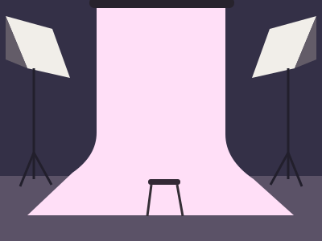

پرترههایی
درست شبیه
خودت.
عکاسی از آدمها، خانوادهها و تیمها؛ در استودیو یا زیر نور روز.
عکاسی از آدمها، خانوادهها و تیمها؛ در استودیو یا زیر نور روز.

یک پسزمینه، یک ست لباس و انتخاب مشترک از بین شاتها.
انتخاب بستهیک جلسه در استودیو با نور نرم و قابهای گروهی و تکی.
انتخاب بستهروایت روز شما با مجموعهای هماهنگ از جزئیات و آدمها.
انتخاب بستهدربارهٔ زمان، نور و حس عکس تصمیم میگیریم.
با چند قاب ساده شروع میکنیم و به ترکیب نهایی میرسیم.
عکسهای منتخب را مرور و برای چاپ آماده میکنیم.
برای ما پرتره از آشنایی شروع میشود. هر جلسه زمانی است برای پیدا کردن همان حالت طبیعی چهره.
لباسی انتخاب کنید که در آن راحتید. رنگهای ساده کمک میکنند چهره مرکز تصویر بماند.
بله، فضای دلخواهتان را در پیام درخواست توضیح دهید تا دربارهٔ نور و زمان مناسب صحبت کنیم.
پس از جلسه نمونهها را کنار هم میبینیم و قابهای نهایی را برمیگزینیم.
برای شروع، زمان پیشنهادی و حالوهوای دلخواهتان را بنویسید.
 انتخاب این طرح
انتخاب این طرح